{{tit}}
{{timeObj.hour_1}}:{{timeObj.minute_1}}:{{timeObj.second_1}}:{{timeObj.msec_1}}
{{timeObj.hour_2}}:{{timeObj.minute_2}}:{{timeObj.second_2}}:{{timeObj.msec_2}}
{{timeObj.hour_1}}:{{timeObj.minute_1}}:{{timeObj.second_1}}:{{timeObj.msec_1}}
{{timeObj.hour_2}}:{{timeObj.minute_2}}:{{timeObj.second_2}}:{{timeObj.msec_2}}
